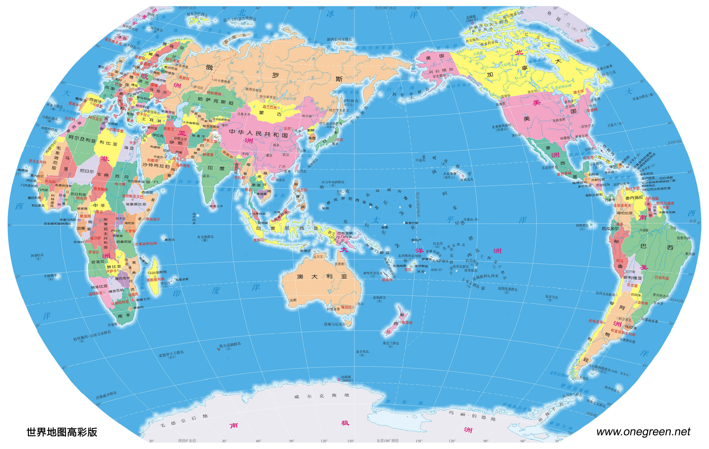

五大洲指地球陆地分成的五大版块，即亚洲(Asia)、欧洲(Europe)、非洲(Africa)、美洲(America)和大洋洲(Oceania)，四大洋是地球上四片海洋(太平洋、大西洋、印度洋、北冰洋)的总称。
一、总览
世界各国是指世界上各个国家，截至2019年，世界上共有233个国家和地区，其中国家有197个(主权国家195个)，地区有36个。197个国家里面，193个是联合国会员国，2个是联合国观察员国(巴勒斯坦，梵蒂冈)，2个未加入联合国(库克群岛，纽埃)。
主权国家是不受其他国家干预或限制，独立自主地处理国内和国际事务的国家。它具有固定领土、一定的居民、一定的政权组织形式和主权的政治单位。在国际法中，主权国家是一个非物质的法律实体，对地理区域拥有主权，并以一个法定的政权机构为代表行使主权，主权是一个独立国家的标志。地区则是指未获得独立的殖民地和属地、托管地等。
国家和地区的根本区别在于是否拥有主权权，国家拥有主权，而地区没有主权，不被国际社会承认为独立的国家，且地区自主程度很高。

二、详细
- 国土面积排行
| 排名 | 国家/地区 | 英文 | 首都 | 国土 |
|---|---|---|---|---|
| 1 | 俄罗斯联邦，又称俄罗斯 | Russian Federation，Russia | 莫斯科 | 1710万 (17,09) |
| 2 | 加拿大 | Canada | 渥太华 | 998万 (9,984) |
| 3 | 中华人民共和国，简称中国 | People’s Republic of China，China | 北京 | 约960万 |
| 4 | 美利坚合众国，简称美国 | United States of America，United States | 华盛顿 | 937万 |
| 5 | 巴西联邦共和国，简称巴西 | The Federative Republic of Brazil，Brazil | 巴西利亚 | 852万 (8,515) |
| 6 | 澳大利亚联邦，简称澳大利亚 | Commonwealth of Australia，Australia | 堪培拉 | 774万 (7,741) |
| 7 | 印度共和国，简称印度 | Republic of India，India | 新德里 | 298万 (2,980,000) |
| 8 | 阿根廷共和国，简称阿根廷 | The Republic of Argentina，Argentina | 布宜诺斯艾利斯 | 278万 (2,780) |
| 9 | 哈萨克斯坦共和国，简称哈萨克斯坦 | The Republic of Kazakhstan，Kazakhstan | 阿斯塔纳 | 272万 (2,724,901) |
| 10 | 阿尔及利亚民主人民共和国，简称阿尔及利亚 | People’s Democratic Republic of Algeria，Algeria | 阿尔及尔 | 238万 (2,381,740) |
| 11 | 刚果民主共和国，简称刚果(金) | The Democratic Republic of the Congo | 金沙萨 | 234万 (2,344,860) |
| 12 | 沙特阿拉伯王国，通称沙特阿拉伯，简称沙特 | Kingdom of Saudi Arabia，Saudi Arabia | 利雅得 | 215万 (2,149,690) |
| 13 | 墨西哥合众国，简称墨西哥，北美洲的一个联邦共和制国家 | The United Mexican States，Mexico | 墨西哥城 | 196万 (1,964,375) |
| 14 | 印度尼西亚共和国，简称印度尼西亚 | Republic of Indonesia，Indonesia | 雅加达 | 191万 (1,913,580) |
| 15 | 苏丹共和国，简称苏丹 | Republic of the Sudan，Sudan | 喀土穆 | 188万 (1,879,357) |
| 16 | 利比亚国，简称利比亚 | State of Libya，Libya | 的黎波里 | 176万 (1,759,540) |
| 17 | 伊朗伊斯兰共和国，简称伊朗 | Islamic Republic of Iran，Iran | 德黑兰 | 175万 (1,745,150) |
| 18 | 蒙古国，简称蒙古 | Mongolia | 乌兰巴托 | 156万 (1,564,120) |
| 19 | 秘鲁共和国，简称秘鲁 | Peru | 利马 | 129万 (1,285,220) |
| 20 | 乍得共和国，简称乍得 | Republic of Chad，Chad | 恩贾梅纳 | 128万 (1,284,000) |
| 21 | 尼日尔共和国，简称尼日尔 | The Republic of Niger，Niger | 尼亚美 | 127万 (1,267,000) |
| 22 | 安哥拉共和国，简称安哥拉 | The Republic of Angola，Angola | 罗安达 | 125万 (1,246,700) |
| 23 | 马里共和国，简称马里 | The Republic of Mali，Mali | 巴马科 | 124万 (1,240,190) |
| 24 | 南非共和国 | The Republic of South Africa | 行政首都(中央政府所在地)为茨瓦内，也称比勒陀利亚，立法首都(议会所在地)为开普敦，司法首都(最高法院所在地)为布隆方丹。 | 122万 (1,219,090) |
| 25 | 哥伦比亚共和国，简称哥伦比亚 | The Republic of Colombia | 波哥大 | 114万 (1,141,748) |
| 26 | 埃塞俄比亚联邦民主共和国，简称埃塞俄比亚 | The Federal Democratic Republic of Ethiopia | 亚的斯亚贝巴 | 110万 (1,104,300) |
| 27 | 多民族玻利维亚国，简称玻利维亚 | Plurinational State of Bolivia | 苏克雷 | 110万 (1,098,580) |
| 28 | 毛里塔尼亚伊斯兰共和国，简称毛里塔尼亚 | The Islamic Republic of Mauritania | 努瓦克肖特 | 103万 (1,030,700) |
| 29 | 阿拉伯埃及共和国，简称埃及 | The Arab Republic of Egypt | 开罗 | 100万 (1,001,450) |
| 30 | 坦桑尼亚联合共和国，简称坦桑尼亚 | The United Republic of Tanzania | 达累斯萨拉姆 | 945,087 |
| 31 | 尼日利亚联邦共和国，简称尼日利亚 | Federal Republic of Nigeria | 阿布贾 | 923,768 |
| 32 | 委内瑞拉玻利瓦尔共和国，简称委内瑞拉 | Bolivarian Republic of Venezuela | 加拉加斯 | 916,445 |
| 33 | 巴基斯坦伊斯兰共和国，简称巴基斯坦 | Islamic Republic of Pakistan，Pakistan | 伊斯兰堡 | 881,912 |
| 34 | 纳米比亚共和国，简称纳米比亚 | The Republic of Namibia | 温得和克 | 825,615 |
| 35 | 莫桑比克共和国，简称莫桑比克 | The Republic of Mozambique | 马普托 | 801,590 |
| 36 | 土耳其共和国，简称土耳其 | The Republic of Turkey | 安卡拉 | 783,562 |
| 37 | 智利共和国，简称智利 | Republic of Chile | 圣地亚哥 | 756,102 |
| 38 | 赞比亚共和国，简称赞比亚 | The Republic of Zambia | 卢萨卡 | 752,612 |
| 39 | 摩洛哥王国，简称摩洛哥 | The Kingdom of Morocco | 拉巴特 | 710,850 |
| 40 | 缅甸联邦共和国，简称缅甸 | The Republic of the Union of Myanmar | 内比都 | 676,578 |
| 41 | 阿富汗伊斯兰共和国，简称阿富汗 | The Islamic Republic of Afghanistan | 喀布尔 | 652,230 |
| 42 | 南苏丹共和国，简称南苏丹 | The Republic of South Sudan | 朱巴 | 644,329 |
| 43 | 法兰西共和国，简称法国 | French Republic，France | 巴黎 | 640,679 |
| 44 | 索马里联邦共和国，简称索马里 | The Federal Republic of Somalia | 摩加迪沙 | 637,657 |
| 45 | 中非共和国，简称中非 | The Central African Republic | 班吉 | 622,984 |
| 46 | 乌克兰 | Ukraine | 基辅 | 603,500 |
| 47 | 马达加斯加共和国，简称马达加斯加 | The Republic of Madagascar | 塔那那利佛 | 587,041 |
| 48 | 博茨瓦纳共和国，简称博茨瓦纳 | The Republic of Botswana | 哈博罗内 | 581,730 |
| 49 | 肯尼亚共和国，简称肯尼亚 | The Republic of Kenya | 内罗华 | 580,367 |
| 50 | 也门共和国，简称也门 | The Republic of Yemen | 萨那 | 527,968 |
| 51 | 泰王国，简称泰国 | The Kingdom of Thailand，Thailand | 曼谷 | 513,120 |
| 52 | 西班牙王国，简称西班牙 | The Kingdom of Spain | 马德里 | 505,992 |
| 53 | 土库曼斯坦 | Turkmenistan | 阿什哈巴德 | 488,100 |
| 54 | 喀麦隆共和国，简称喀麦隆 | Republic of Cameroon，Cameroon | 雅温得 | 475,442 |
| 55 | 巴布亚新几内亚独立国，简称巴布亚新几内亚 | The Independent State of Papua New Guinea，Papua New Guinea | 莫尔斯比港 | 462,840 |
| 56 | 瑞典王国，简称瑞典 | The Kingdom of Sweden，Sweden | 斯德哥尔摩 | 450,295 |
| 57 | 乌兹别克斯坦共和国，简称乌兹别克斯坦 | Republic of Uzbekistan，Uzbekistan | 塔什干 | 447,400 |
| 58 | 伊拉克共和国，简称伊拉克 | Republic of Iraq，Iraq | 巴格达 | 438,317 |
| 59 | 巴拉圭共和国，简称巴拉圭 | The Republic of Paraguay，Paraguay | 亚松森 | 406,752 |
| 60 | 津巴布韦共和国，简称津巴布韦 | The Republic of Zimbabwe，Zimbabwe | 哈拉雷 | 390,757 |
| 61 | 日本国，简称日本 | Japan | 东京 | 377,973 |
| 62 | 德意志联邦共和国，简称德国 | The Federal Republic of Germany，Germany | 柏林 | 357,114 |
| 63 | 刚果共和国，简称刚果(布) | The Republic of Congo，Congo | 布拉柴维尔 | 342,000 |
| 64 | 芬兰共和国，简称芬兰 | The Republic of Finland，Finland | 赫尔辛基 | 338,424 |
| 65 | 越南社会主义共和国，简称越南 | Socialist Republic of Vietnam，Vietnam | 河内 | 331,212 |
| 66 | 马来西亚 | Malaysia | 吉隆坡 | 330,803 |
| 67 | 挪威王国，简称挪威 | The Kingdom of Norway，Norway | 奥斯陆 | 385,000 |
| 68 | 科特迪瓦共和国，简称科特迪瓦 | The Republic of Côte d’Ivoire，Ivory Coast | 亚穆苏克罗 | 322,463 |
| 69 | 波兰共和国，简称波兰 | The Republic Of Poland，Poland | 华沙 | 312,696 |
| 70 | 阿曼苏丹国，简称阿曼 | Sultanate of Oman，Oman | 马斯喀特 | 309,500 |
| 71 | 意大利共和国，简称意大利 | The Republic of Italy，Italy | 罗马 | 301,339 |
| 72 | 菲律宾共和国，简称菲律宾 | Republic of the Philippines，Philippines | 马尼拉 | 300,000 |
| 73 | 厄瓜多尔共和国，简称厄瓜多尔 | The Republic of Ecuador，Ecuador | 基多 | 276,841 |
| 74 | 布基纳法索 | Burkina Faso | 瓦加杜古 | 274,222 |
| 75 | 新西兰 | New Zealand | 惠灵顿 | 270,467 |
| 76 | 加蓬共和国，简称加蓬 | The Gabonese Republic，Gabon | 利伯维尔 | 267,668 |
| 77 | 几内亚共和国，简称几内亚 | The Republic of Guinea，Guinea | 科纳克里 | 245,857 |
| 78 | 大不列颠及北爱尔兰联合王国，简称英国 | United Kingdom of Great Britain and Northern Ireland，United Kingdom | 伦敦 | 242,495 |
| 79 | 乌干达共和国，简称乌干达 | The Republic of Uganda，Uganda | 坎帕拉 | 241,550 |
| 80 | 加纳共和国，简称加纳 | The Republic of Ghana，Ghana | 阿克拉 | 238,533 |
| 81 | 罗马尼亚 | Romania | 布加勒斯特 | 238,397 |
| 82 | 老挝人民民主共和国，简称老挝 | The Lao People’s Democratic Republic，Laos | 万象 | 236,800 |
| 83 | 圭亚那合作共和国，简称圭亚那 | Cooperative Republic of Guyana | 乔治敦 | 214,969 |
| 84 | 白俄罗斯共和国，简称白俄罗斯 | Republic of Belarus，Belarus | 明斯克 | 207,600 |
| 85 | 吉尔吉斯共和国，简称吉尔吉斯斯坦 | Kyrgyz Republic，Kyrgyzstan | 比什凯克 | 199,951 |
| 86 | 塞内加尔共和国，简称塞内加尔 | The Republic of Senegal，Senegal | 达喀尔 | 196,722 |
| 87 | 阿拉伯叙利亚共和国，简称叙利亚 | The Syrian Arab Republic，Syria | 大马士革 | 185,180 |
| 88 | 柬埔寨王国，简称柬埔寨 | Kingdom of Cambodia，Cambodia | 金边 | 181,035 |
| 89 | 乌拉圭共和国，简称乌拉圭 | The Oriental Republic of Uruguay，Uruguay | 蒙得维的亚 | 176,215 |
| 90 | 苏里南共和国，简称苏里南 | The Republic of Suriname，Suriname | 帕拉马里博 | 163,820 |
| 91 | 突尼斯共和国，简称突尼斯 | The Republic of Tunisia，Tunisia | 突尼斯 | 163,610 |
| 92 | 孟加拉人民共和国，简称孟加拉国 | The People’s Republic of Bangladesh，Bangladesh | 达卡 | 147,570 |
| 93 | 尼泊尔联邦民主共和国，简称尼泊尔 | Federal Democratic Republic of Nepal，Nepal | 加德满都 | 147,181 |
| 94 | 塔吉克斯坦共和国，简称塔吉克斯坦 | The Republic of Tajikistan，Tajikistan | 杜尚别 | 143,100 |
| 95 | 希腊共和国，简称希腊 | The Hellenic Republic，也称Greece | 雅典 | 131,990 |
| 96 | 尼加拉瓜共和国，简称尼加拉瓜 | The Republic of Nicaragua，Nicaragua | 马那瓜 | 130,373 |
| 97 | 朝鲜民主主义人民共和国，简称朝鲜 | Democratic People’s Republic of Korea，也称 North Korea | 平壤 | 120,540 |
| 98 | 马拉维共和国，简称马拉维 | The Republic of Malawi，Malawi | 布兰太尔 | 118,484 |
| 99 | 厄立特里亚 | The State of Eritrea，Eritrea | 阿斯马拉 | 117,600 |
| 100 | 贝宁共和国，简称贝宁 | The Republic of Benin，Benin | 波多诺伏 | 114,763 |
| 101 | 洪都拉斯共和国，简称洪都拉斯 | The Republic of Honduras，Honduras | 特古西加尔巴 | 112,492 |
| 102 | 利比里亚共和国，简称利比里亚 | The Republic of Liberia，Liberia | 蒙罗维亚 | 111,369 |
| 103 | 保加利亚共和国，简称保加利亚 | The Republic of Bulgaria，Bulgaria | 索非亚 | 110,879 |
| 104 | 古巴共和国，简称古巴 | The Republic of Cuba，Cuba | 哈瓦那 | 109,884 |
| 105 | 危地马拉共和国，简称危地马拉 | The Republic of Guatemala，Guatemala | 危地马拉 | 108,889 |
| 106 | 冰岛共和国，简称冰岛 | The Republic of Iceland，Iceland | 载克雅未克 | 103,000 |
| 107 | 大韩民国，韩国 | Republic of Korea，也称 South Korea | 首尔 | 100,210 |
| 108 | 匈牙利 | Hungary | 布达佩斯 | 93,028 |
| 109 | 葡萄牙共和国，简称葡萄牙 | The Portuguese Republic | 里斯本 | 92,090 |
| 110 | 约旦哈希姆王国，简称约旦 | The Hashemite Kingdom of Jordan | 安曼 | 89,342 |
| 111 | 塞尔维亚共和国，简称塞尔维亚 | The Republic of Serbia | 贝尔格莱德 | 88,361 |
| 112 | 阿塞拜疆共和国，简称阿塞拜疆 | The Republic of Azerbaijan | 巴库 | 86,600 |
| 113 | 奥地利共和国，简称奥地利 | The Republic of Austria | 维也纳 | 83,871 |
| 114 | 阿拉伯联合酋长国，简称阿联酋 | The United Arab Emirates | 阿布扎比 | 83,600 |
| 115 | 捷克共和国，简称捷克 | The Czech Republic | 布拉格 | 78,865 |
| 116 | 巴拿马共和国，简称巴拿马 | The Republic of Panama | 巴拿马城 | 75,417 |
| 117 | 塞拉利昂共和国，简称塞拉利昂 | The Republic of Sierra Leone | 弗里敦 | 71,740 |
| 118 | 爱尔兰共和国，简称爱尔兰 | Republic of Ireland | 都柏林 | 70,273 |
| 119 | 格鲁吉亚 | Georgia | 第比利斯 | 69,700 |
| 120 | 斯里兰卡民主社会主义共和国，简称斯里兰卡 | The Democratic Socialist Republic of Sri Lanka | 斯里贾亚瓦德纳普拉科特(国际记科伦坡为首都) | 65,610 |
| 121 | 立陶宛共和国，简称立陶宛 | The Republic of Lithuania | 维尔纽斯 | 65,300 |
| 122 | 拉脱维亚共和国，简称拉脱维亚 | The Republic of Latvia | 里加 | 64,559 |
| 123 | 多哥共和国，简称多哥 | The Republic of Togo | 洛美 | 56,785 |
| 124 | 克罗地亚共和国，简称克罗地亚 | The Republic of Croatia | 萨格勒布 | 56,594 |
| 125 | 波斯尼亚和黑塞哥维那，简称波黑 | Bosnia and Herzegovina | 萨拉热窝 | 51,209 |
| 126 | 哥斯达黎加共和国，简称哥斯达黎加 | The Republic of Costa Rica | 圣何塞 | 51,100 |
| 127 | 斯洛伐克共和国，简称斯洛伐克 | The Slovak Republic | 布拉迪斯拉发 | 49,037 |
| 128 | 多米尼加共和国，简称多米尼加 | The Dominican Republic | 圣多明各 | 48,671 |
| 129 | 爱沙尼亚共和国，简称爱沙尼亚 | Republic of Estonia | 塔林 | 45,227 |
| 130 | 丹麦王国，简称丹麦 | The Kingdom of Denmark | 哥本哈根 | 43,094 |
| 131 | 荷兰王国，简称荷兰 | The Kingdom of the Netherlands | 阿姆斯特丹 | 41,850 |
| 132 | 瑞士联邦，简称瑞士 | Swiss Confederation | 伯尔尼 | 41,284 |
| 133 | 不丹王国，简称不丹 | Kingdom of Bhutan | 廷布 | 38,394 |
| 134 | 几内亚比绍共和国，简称几内亚比绍 | The Republic of Guinea-Bissau | 比绍 | 36,125 |
| 135 | 摩尔多瓦共和国，简称摩尔多瓦 | The Republic of Moldova | 基希讷乌 | 33,846 |
| 136 | 比利时王国，简称比利时 | The Kingdom of Belgium | 布鲁塞尔 | 30,528 |
| 137 | 莱索托王国，简称莱索托 | The Kingdom of Lesotho | 马塞卢 | 30,355 |
| 138 | 亚美尼亚共和国，简称亚美尼亚 | The Republic of Armenia | 埃里温 | 29,743 |
| 139 | 所罗门群岛 | Solomon Islands | 霍尼亚拉 | 28,896 |
| 140 | 阿尔巴尼亚共和国，简称阿尔巴尼亚 | Republic of Albania | 地拉那 | 28,748 |
| 141 | 赤道几内亚共和国，简称赤道几内亚 | The Republic of Equatorial Guinea | 马拉博 | 28,051 |
| 142 | 布隆迪共和国，简称布隆迪 | The Republic of Burundi | 布琼布拉 | 27,834 |
| 143 | 海地共和国，简称海地 | The Republic of Haiti | 太子港 | 27,750 |
| 144 | 卢旺达共和国，简称卢旺达 | The Republic of Rwanda | 基加利 | 26,338 |
| 145 | 北马其顿共和国，简称北马其顿 | The Republic of North Macedonia | 斯科普里 | 25,713 |
| 146 | 吉布提共和国，简称吉布提 | The Republic of Djibouti | 吉布提市 | 23,200 |
| 147 | 伯利兹 | Belize | 贝尔莫潘 | 22,966 |
| 148 | 萨尔瓦多共和国，简称萨尔瓦多 | The Republic of El Salvador | 圣萨尔瓦多 | 21,041 |
| 149 | 以色列国，简称以色列 | The State of Israel | 耶路撒冷(和巴勒斯坦共有) | 20,770 |
| 150 | 斯洛文尼亚共和国，简称斯洛文尼亚 | The Republic of Slovenia | 卢布尔雅那 | 20,273 |
| 151 | 斐济共和国，简称斐济 | The Republic of Fiji | 苏瓦 | 18,272 |
| 152 | 科威特国，简称科威特 | The State of Kuwait | 科威特城 | 17,818 |
| 153 | 斯威士兰王国，简称斯威士兰 | The Kingdom of Swaziland | 姆巴巴内 | 17,364 |
| 154 | 东帝汶民主共和国，简称东帝汶 | Democratic Republic of Timor-Leste | 帝力 | 14,919 |
| 155 | 巴哈马国，简称巴哈马 | The Commonwealth of The Bahamas | 拿骚 | 13,943 |
| 156 | 黑山王国，简称黑山 | The Kingdom of Montenegro | 采蒂涅 | 13,812 |
| 157 | 瓦努阿图共和国，简称瓦努阿图 | The Republic of Vanuatu | 维拉港 | 12,189 |
| 158 | 卡塔尔国，简称卡塔尔 | The State of Qatar | 多哈 | 11,586 |
| 159 | 冈比亚共和国，简称冈比亚 | The Republic of Gambia | 班珠尔 | 11,295 |
| 160 | 牙买加 | Jamaica | 金斯敦 | 10,991 |
| 161 | 黎巴嫩共和国，简称黎巴嫩 | The Republic of Lebanon | 贝鲁特 | 10,452 |
| 162 | 塞浦路斯共和国，简称塞浦路斯 | The Republic of Cyprus | 尼科西亚 | 9,251 |
| 163 | 巴勒斯坦国，简称巴勒斯坦 | State of Palestine | 耶路撒冷(法定)、拉姆安拉(实际) | 6,020 |
| 164 | 文莱达鲁萨兰国，简称文莱 | Negara Brunei Darussalam | 斯里巴加湾市 | 5,765 |
| 165 | 特立尼达和多巴哥共和国，简称特立尼达和多巴哥 | Republic of Trinidad and Tobago | 西班牙港 | 5,130 |
| 166 | 佛得角共和国，简称佛得角 | The Republic of Cabo Verde | 普拉亚 | 4,033 |
| 167 | 萨摩亚独立国，简称萨摩亚 | The Independent State of Samoa | 阿皮亚 | 2,842 |
| 168 | 卢森堡大公国，简称卢森堡 | The Grand Duchy of Luxembourg | 卢森堡市 | 2,586 |
| 169 | 毛里求斯共和国，简称毛里求斯 | The Republic of Mauritius | 路易港 | 2,040 |
| 170 | 科摩罗联盟，简称科摩罗 | Union of Comoros | 莫罗尼 | |
| 171 | 圣多美和普林西比民主共和国，简称圣多美和普林西比 | The Democratic Republic of Sao Tome and Principe | 圣多美 | 964 |
| 172 | 基里巴斯共和国，简称基里巴斯 | The Republic of Kiribati | 塔拉瓦 | 811 |
| 173 | 巴林王国，简称巴林 | The Kingdom of Bahrain | 麦纳麦 | 767 |
| 174 | 多米尼克国，简称多米尼克 | The Commonwealth of Dominica | 罗索 | 751 |
| 175 | 汤加王国，简称汤加 | The Kingdom of Tonga | 努库阿洛法 | 747 |
| 176 | 新加坡共和国，简称新加坡 | Republic of Singapore | 新加坡市 | 717 |
| 177 | 密克罗尼西亚联邦，简称密联邦 | The Federated States of Micronesia | 帕利基尔 | 705 |
| 178 | 圣卢西亚 | Saint Lucia | 卡斯特里 | 616 |
| 179 | 安道尔公国，简称安道尔 | The Principality of Andorra | 安道尔城 | 468 |
| 180 | 帕劳共和国，简称帕劳 | The Republic of Palau | 梅莱凯奥克 | 465.55 |
| 181 | 塞舌尔共和国，简称塞舌尔 | Republic of Seychelles | 维多利亚 | 455.80 |
| 182 | 安提瓜和巴布达 | Antigua and Barbuda | 圣约翰 | 442 |
| 183 | 巴巴多斯 | Barbados | 布里奇顿 | 431 |
| 184 | 圣文森特和格林纳丁斯 | Saint Vincent and the Grenadines | 金斯敦 | 389 |
| 185 | 格林纳达 | Grenada | 圣乔治 | 344 |
| 186 | 马耳他共和国，简称马耳他 | Republic of Malta | 瓦莱塔 | 316 |
| 187 | 马尔代夫共和国，简称马尔代夫 | The Republic of Maldives | 马累 | 300 |
| 188 | 圣基茨和尼维斯联邦，简称圣基茨和尼维斯 | The Federation of Saint Kitts and Nevis | 巴斯特尔 | 261 |
| 189 | 纽埃 | Niue | 阿洛菲 | 260 |
| 190 | 库克群岛 | The Cook Islands | 阿瓦鲁阿 | 240 |
| 191 | 马绍尔群岛共和国，简称马绍尔群岛 | The Republic of Marshall Island | 马朱罗 | 181 |
| 192 | 列支敦士登公国，简称列支敦士登 | Principality of Liechtenstein | 瓦杜兹 | 160 |
| 193 | 圣马力诺共和国，简称圣马力诺 | The Republic of San Marino | 圣马力诺市 | 61.20 |
| 194 | 图瓦卢 | Tuvalu | 富纳富提 | 26 |
| 195 | 瑙鲁共和国，简称瑙鲁 | The Republic of Nauru | 不设首都，行政管理中心在亚伦 | 21 |
| 196 | 摩纳哥公国，简称摩纳哥 | The Principality of Monaco | 摩纳哥城 | 2.02 |
| 197 | 梵蒂冈城国，简称梵蒂冈 | Vatican City State | 梵蒂冈城 | 0.44 |
共和国，共和政治的基本含义就是国家和政府是公共的，而不是私人的，国家和政府应当为公共利益而努力，而不应当为私人利益而奋斗。共和政治的另一个基本含义是，国家各级政权机关的领导人不是继承的，不是世袭的，也不是命定的，而是由自由公正的选举产生的。因而，公正而自由的选举，是判断一个国家是否真正实行共和政治的又一基本准则。
合众国是指以团结民众，实现民主为主旨的联邦制国家，例如美利坚合众国，墨西哥合众国等，这些国家皆是实行民主制的联邦制国家。
联邦制是和单一制相对应的
单一制国家只有一个中央政府代表国家行使外交权利，只有一部统一的宪法，有一套法律体系。联邦制国家不同，其下辖的加盟国都有自己的宪法，有对外交往权利，有自己的法律体系。
联邦制是由几个成员国(如共和国或邦、州等)联合组成统一国家的政治体制。它是国际交往中的主体，有自己的最高立法机关和行政机关，有统一的宪法和法律。联邦行使国家的外交、军事、财政等主要权力。联邦同成员国间的权限划分由联邦宪法规定。
- 36个地区
- 欧洲2个：直布罗陀(英占)、法罗群岛(丹)
- 非洲3个：留尼汪(法)、西撒哈拉、圣赫勒拿(英)
- 大洋洲11个：诺福克岛(澳)、圣诞岛(澳)、科科斯群岛(澳)、北马⾥亚纳群岛(美)、关岛(美)、托克劳(新)、瓦利斯和富图纳(法)、新喀⾥多尼亚(法)、美属萨摩亚、法属波利尼西亚、皮特凯恩群岛(英)
- 北美洲17个：格陵兰(丹)、圣⽪埃尔和密克隆(法)、百慕大(英)、特克斯和凯科斯群岛(英)、开曼群岛(英)、波多黎各(美)、美属维尔京群岛、英属维尔京群岛、安圭拉(英)、蒙特塞拉特(英)、⽠德罗普(法)、 马提尼克(法)、圣马丁(法)、圣马丁(荷)、 圣巴泰勒米(法)、库拉索(荷)、阿鲁巴 (荷)
- 南美洲2个：法属圭亚那、⻢尔维纳斯群岛
- 南极洲1个：南极⼤陆及周边岛屿